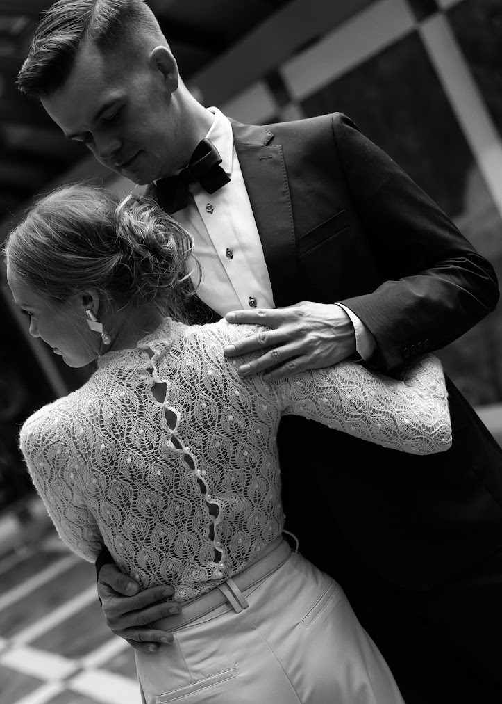
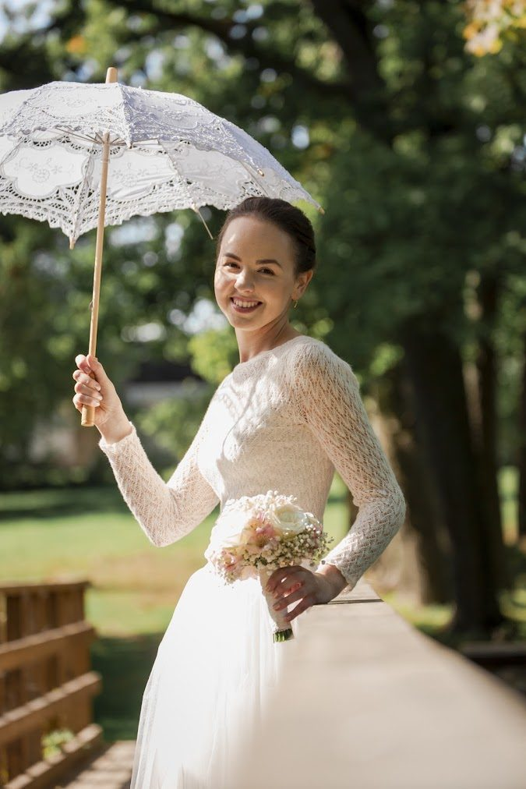
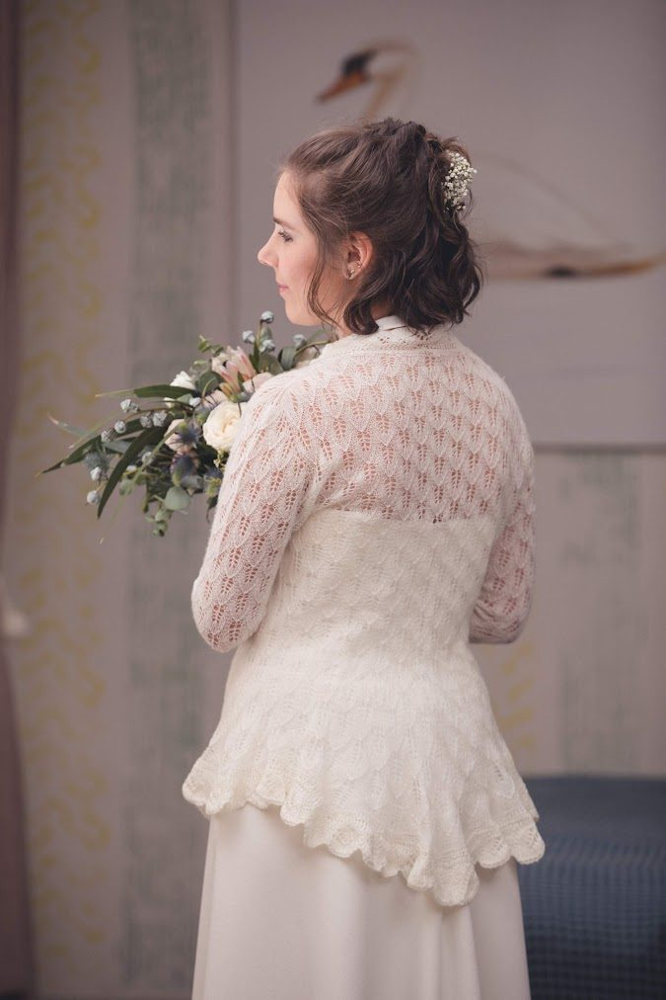
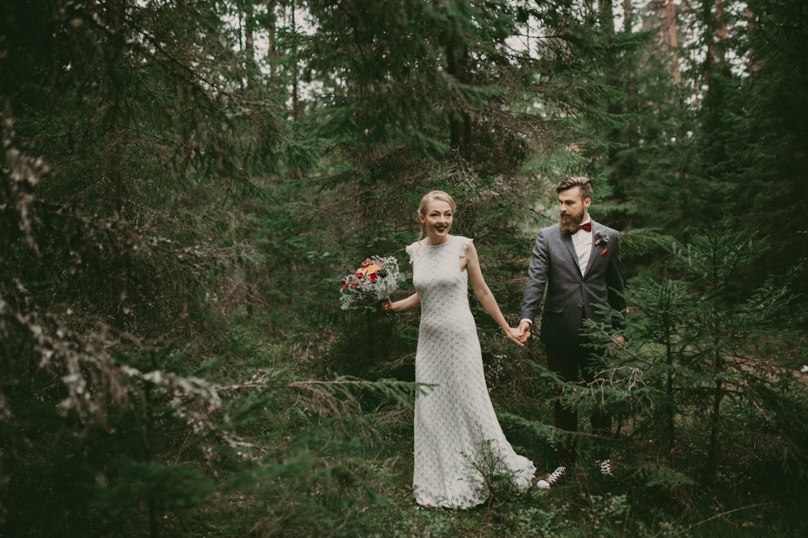
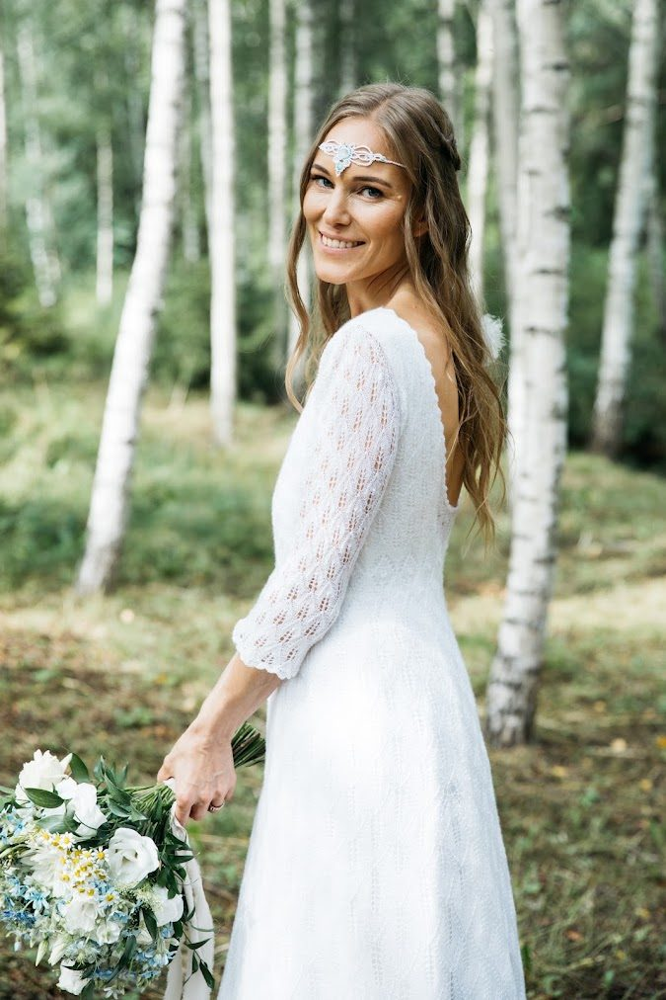
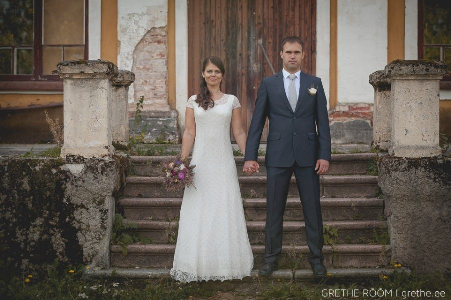
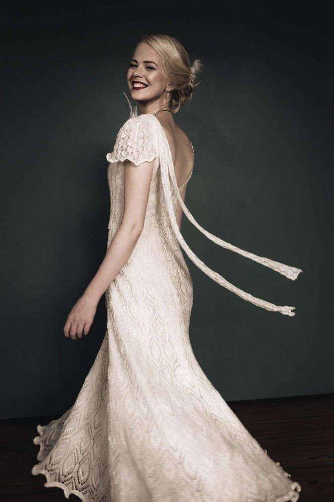
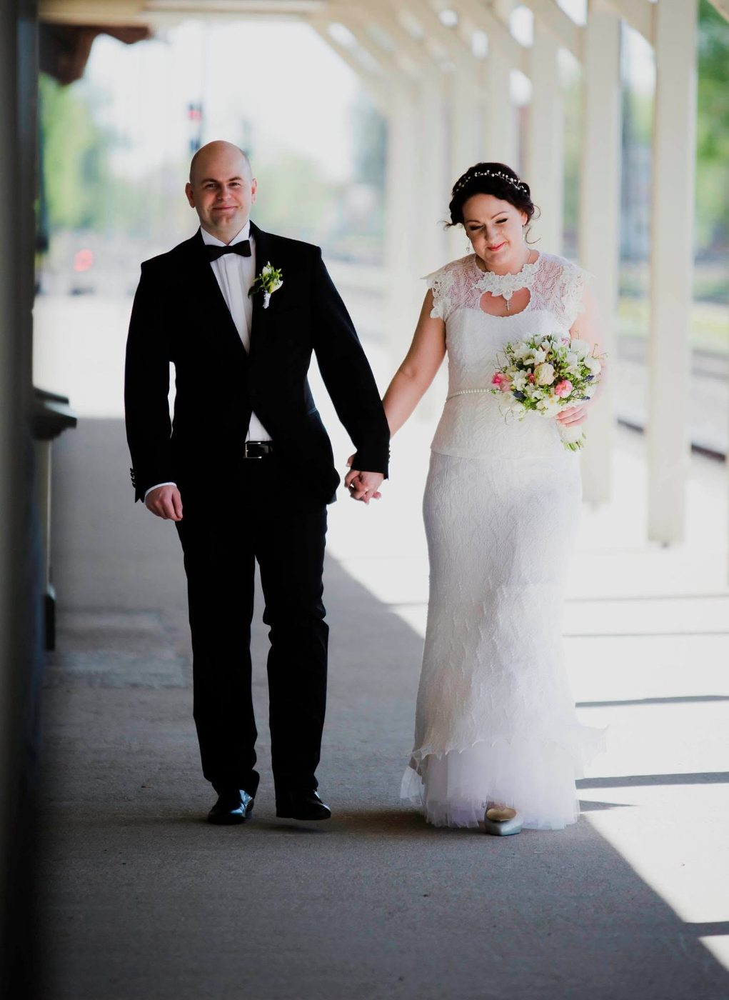

Iga pruutkleit sünnib personaalselt: kõigepealt ideena tulevase pruudi mõtetes, siis joonisena paberil ning koostöös professionaalsete õmblejatega saab pulmapäeval imekaunis mõrsja oma kleidiga altari ette astuda.
See on suur õnn olla nende kudumite looja! Aitäh teile, kallid senised pruudid, et olete usaldanud oma elu kõige tähtsama päeva kleidi minu varrastele. Siit lehelt leiad iga kleidi loo – kõik nad on omamoodi muinasjutulised ja kordumatud!
Tahad ka oma pulmapäeval hõljuda õhkõrnas käsitööna kootud pitskleidis, -seelikus, -jakis või -pluusis – võimalusi on mitmeid! Võta julgelt ühendust ja leiame Sulle sobiva!
Unista, ja Sulle antakse… aga kui juba unistama julged hakata, siis ikka suurelt! Ja nii ma teinud olengi, mille tulemusena on vaikselt iga minu lõngaunistus täitunud. Väga-väga pikalt olen ise imetlenud, nüüd sain varrastega valmiski vormida.
..novembri algus, tempokas tööpäev on jõudnud lõunasse, tohutu küpsiseisu, lippan kiirelt poodi. Autost väljudes kiikan korraks telefoni ja näen Heidi kirja – body soov, ooo! Parklast poodi kõndides katsun kiirelt vastata, peas tiksumas mõte, ”no ma ei ole ju seda kunagi varem teinud… aga …aga… kootakse ju, seega on ikka tehtav…”. ..kontorisse tagasi jõudes hüppan taas töörongile ja unustan hetkeks selle teema. Hetk hiljem hakkas siiski tõsiselt põnev – vastus saabus!
Body sai kootud mõõtude järgi, mõõdud sai võetud kolmekesi läbi videokõne: mina juhendasin ja Heidi tulevane toimetas ümber modelli. Kolm nädalat lõnga seadmist ja body sai kinkekarpi – õrn, sulgkerge, keha hellitavalt paitav.
Imeilusat teekonda teile, noored!


Helen, see särav ja soe kaunis noor naine kirjutas mulle juba kevadel, olles kindel, et tema pikka kootud kleiti pulmapäevaks ei soovi, kuid üks õrn ja kaunis pitspluus võiks küll olla. Selline, mida saab kanda ka peale tähtsat päeva pidulikel puhkudel. Pluus, mis on nii õrn ja samas nii soe, sobib nii pika kui lühikese seelikuga ning miks mitte ka püksiga… Oma sära lisab see igal juhul!
Helen ja Rauno abiellusid 7.septembril – trehvas olema imekaunis päev mille jäädvustas Brita Binsol.
Heleni enda kommentaar peale pulmapäeva: See oli minu jaoks ainuõige valik. Tundsin ennast selles pluusis terve päev väga mugavalt ja külalised ei jõudnud ära kiita.. Ja minu süda oli rahul! Las fotod räägivad enda eest…
Kaunist kooskasvamist teile, noored
John Lennon on kunagi öelnud: ”Armastus on lubadus, armastus on suveniir. Kui see on sulle antud, ei saa seda kunagi unustada, ära lase sel kunagi kaduda!”
Stina ja Tõnis on leidnud oma tee, oma armastuse – hoidke ja kasvatage seda! Nautige iga pisiasja oma argipäevas, talletage head mälestused, et oleks mida aastate pärast, mererannas kuuvalgel ööl, varbaid sooja liiva sisse surudes, meenutada! Ja ma loodan, et see kootud pitskampsun sobib Stinale ka aastate möödudes, meenutamaks seda imekaunist päeva!
Aitäh usalduse eest!


Ajal, mil metshaldjad Viru raba servas õhtuudu ootasid, jalutas üks julge haldjapruut läbi nende radade õnneliku abielu poole… Õnneks on ju tegelikult vähe vaja – armastatud kaaslasest piisab, kellega koos ühiseid sihte seada, käsikäes tulevikku vaadata. 2.septembril 2017 abiellus imekaunis Liilia, kandes pulmapäeval kootud kleiti, minu kootud.
Ja taas sai kleit alguse kirjade teel umbes pool aastat enne tähtpäeva, aprillis. Imelihtne on täita pruutide unistusi kes teavad, mida nad soovivad. Liilia teadis! Kudumi puhul küll päris kõiki nüansse teostada ei anna, näiteks ei õnnestu kududa nurki, aga vaatamata sellele saavad tulemused kaunid ja omapärased.
Imelisi hetki teineteise seltsis pikkadeks aastateks
Õnn ei sõltu välistest teguritest, vaid sellest, kuidas meie neid tõlgendame! (Lev Tolstoi)
Triinu ja Priidu tõlgendus on olla õnnelik, nautida iga hetke päevas ja muidugi teineteist!
Iga kokkusaamine, mis meil Triinuga 2021.aasta suvel oli, oli siiralt soe ja muinasjutuline. See harmoonia, mis sai alguse juba nende koduõues, mis esimest korda paduvihmas meid vastu võttis, jätkus toas.. Soojus, ehedus, siirus – selle kõige pärast saangi nimetada Triinu meie (minu ja Svea) haldjapruudiks.
..ja kui hästi on suutnud fotograaf Cärol Liis Metsla tabada seda armastust! See kõik on ehe, mina tean! Saan tänada taas tähti, kes ristasid meie teed – aitäh Triin, et andsid võimaluse endale kududa!
See kõik oli nauding isegi kell pool kolm teisipäeva öösel, kui purunenud lõnga tõttu ligi 300 imepisikest pärli mu elutoa põrandal laiali olid ja järgmisel keskpäeval pidime Sinu poole startima, et kleit üle anda….ja pärlid said alla serva paika veel samal ööl…. Jah, isegi siis oli see puhas rõõm!
Imelist teekonda, mu kallid!


Hindan väga pruute, kes varakult ette mõtlevad – nii saame kõik detailid läbi mõelda ja kleidi kudumine, mis võtab aega, ei jää viimasele minutile. Mirjam leidis mu veebruaris 2016. 20.juuliks oli õmblejal aluskleidi toorik valmis ja mina sain vardad lõnga ajada. Täpselt kuu ja 2 päeva hiljem saime taas õmbleja juures kokku ja andsime kleidi üle – piisava varuga, et pruut saaks rahulikult keskenduda muudele toimetustele.
Aluskleidi osas (nagu ka mitme järgnevagi osas) tegime koostööd Jaanika Stuudioga, ehk selle kauni pruudiga, kellele oli au kududa just vahetult eelmine komplekt – ehk õiged inimesed tulevad meie ellu täpselt õigel ajal.
Kootud kleidid on imeliselt õhulised ja kerged – kuigi siia kleiti kulus 2,7 kilomeetrit lõnga, kaalub see vaid 193 grammi!
Kaunist kooskasvamist!
Kaunis kudum sünnib soojast koostööst! Marise esimene kiri mulle oli täis soojust ja armastust käsitöö vastu. Et tema kallim oli talle teinud abieluettepaneku tavapärase kihlasõrmuse asemel haapsalu salliga, oli kootud kleit ainuke tema jaoks mõeldav lahendus pruutkleidiks. Ja ma olen siiralt õnnelik, et selle soovi täitmiseks valis ta minu.
Meie peaaegu kahekuuline koostöö oli täis soojust, sära ja imearmast vahetut suhtlemist – aitäh! Mustrite valik oli lihtne, Maris ei peljanud rombe ja nii sai kleidi seelikuossa mulle endale väga armas Aasa kiri ja ülaossa Tõllakiri Haapsalu rätiraamatust.
Maris ja Robert – olgu teie tee täis üksteisemõistmist ja armastust. Leidke igasse päeva üks killuke päikest!


Janika ja Tauno abiellusid 2016.aasta mai alguses. Kui pruutpaar Tartu Pauluse kirikusse sisenes ei suutnud ma tükk aega hingata – nii imeline oli näha oma kätetööd kauni pruudi seljas. Liiati, et olin ju alles nii algaja…
Jaanika leidis mu varakult – juba novembris 2015. Veebruari alguses istusime maha ja panime paika, mismoodi täpselt komplekt saama peab ja jäi vaid kudumise rõõm. Tartlastena oli lihtne iga teatud aja tagant proove teha veendumaks, et töö kasvab õiges mõõdus ja tempos. Ja aprilli lõpus, nädal enne pulmi, oli minu poolt kõik valmis.
Õnne ja õnnestumisi! Aitäh, et usaldasite!
Tahad ka oma pulmapäeval hõljuda õhkõrnas käsitööna kootud pitskleidis?
Võta ühendust